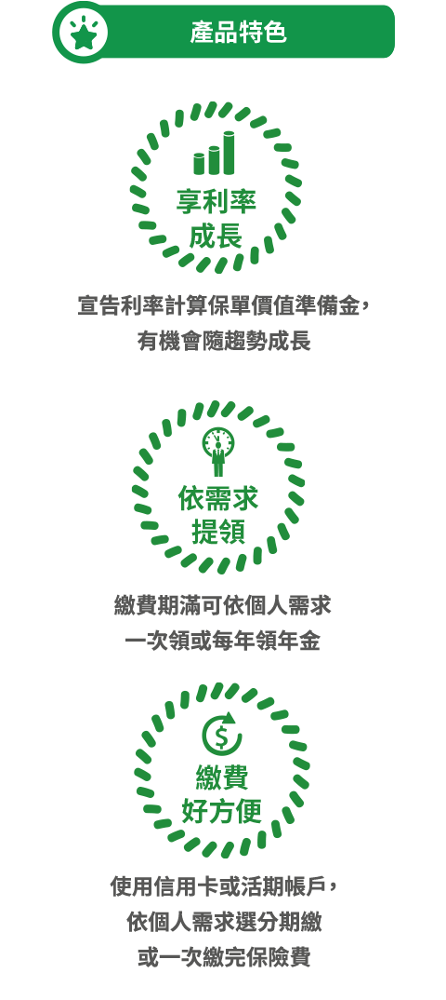
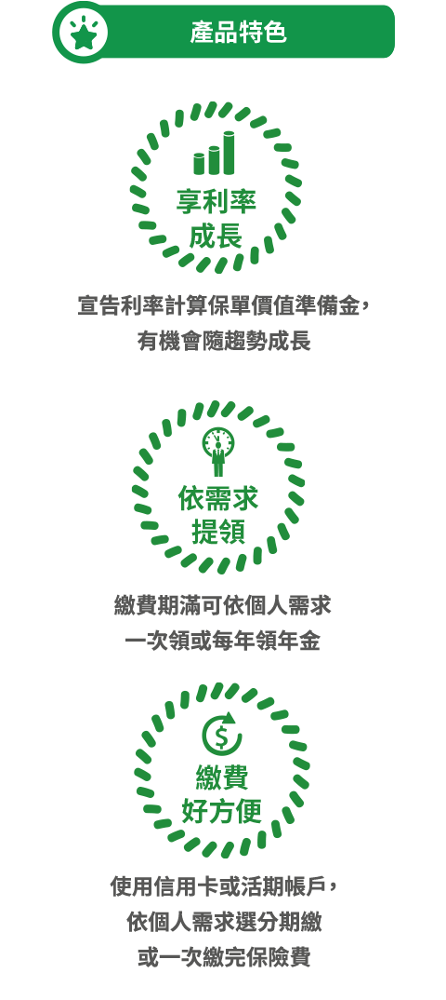
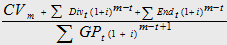
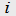
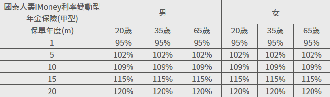

國泰人壽iMoney利率變動型年金保險(甲型)
中華民國106年8月11日國壽字第106080117號(備查)
- 本保險為不分紅保險單，不參加紅利分配，並無紅利給付項目。
- 要保人可透過國泰人壽免費客服專線（0800-036-599）或網站 （www.cathayholdings.com/life）、總公司（臺北市仁愛路四段 296號）、分公司及通訊處所提供之電腦查閱資訊公開說明文件。
- 消費者於購買前，應詳閱各種銷售文件內容，本商品之預定附加費用率 1.2%； 如要詳細了解其他相關資訊，請洽本行業務員、國泰人壽服務中心（免費客服專線：0800-036-599）或網站（ www.cathayholdings.com/life ），以保障您的權益。
- 本保險為保險商品，依保險法及其他相關規定，受「保險安定基金」之保障。
- 本保險為非存款商品，不受「存款保險」之保障。
- 人壽保險之死亡給付及年金保險之確定年金給付於被保險人死亡後給付於指定受益人者，依保險法第一百十二條規定不得作為被保險人之遺產，惟如涉有規避遺產稅等稅捐情事者，稽徵機關仍得依據有關稅法規定或稅捐稽徵法第十二條之一所定實質課稅原則辦理。相關實質課稅原則案例，可至國泰人壽官方網站首頁查詢。
- 宣告利率係指國泰人壽於本契約生效日或各保單週年日當月宣告並用以計算該年度年金保單價值準備金之利率，該利率係參考國泰人壽運用此類商品所累積資產的實際狀況而訂定，最低不得為負數，同一保單年度內均適用該保單年度首月之宣告利率。本契約宣告利率可於國泰人壽網站( www.cathayholdings.com/life )依本契約所對應之險別代號查詢之。
- 本簡介僅供參考，詳細內容以保單條款為準。
- 本保險由國泰人壽發行，由國泰世華商業銀行股份有限公司為行銷通路招攬，惟國泰人壽保有最終承保與否之一切權利。
揭露事項:
※依據台財保字第0920012416號令及金管保一字第09602083930號函，本商品各保單年度末之解約金、生存金及紅利金額總和與加計利息之應繳保險費累積值之差異情形依下列公式揭露。

：前一日曆年度之十二個月臺灣銀行、第一銀行與合作金庫三家行庫每月初（每月第一個營業日）牌告之二年期定期儲蓄存款最高年利率之平均值（1.08%）。
CVm：第m保單年度之年末解約金，但其計算有引用宣告利率者，該宣告利率以銷售當時各該商品之宣告利率及i+1%兩者之最小值設算；惟宣告利率易受經濟環境及公司經營等因素影響，故此宣告利率所設算之結果僅供消費者參考之用，並非保證之金額。
Divt：第t保單年度之可能紅利金額（本險為不分紅保險，故無此項數值)。
GPt：第t保單年度之年繳保險費。
Endt：第t保單年度之生存保險金，但無生存保險金之給付者，其值為0。
m：應揭露之年期；惟利率變動型年金僅揭露年金累積期間即可。
範例：以躉繳保費新臺幣10萬元，年金累積期間20年為例，提供三個主要年齡第m年保單年度末之保費效益分析，m=1/5/10/15/20：
註：試算之宣告利率=Min(2.46%,1.08%+1%)=2.08%
※上表數值若比例小於100%，表示解約時保戶所領解約金及生存金之合計金額小於保戶總繳保險費，故投保後提早解約或不繼續繳費，將可能產生不利消費者之情形。